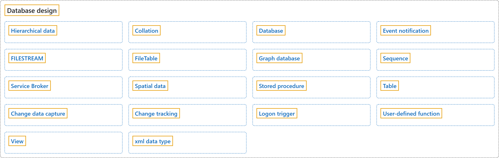

2. Database Design
Classification

Glossary
| Term | Definition | 中文翻译 | Source |
|---|---|---|---|
| Hierarchical data 层次结构数据 |
"Hierarchical data is defined as a set of data items that are related to each other by hierarchical relationships." | 层次结构数据被定义为一组通过层次关系相互关联的数据项。 | Microsoft, 2025c, para. 2 |
| Collation 排序规则 |
"A collation specifies the bit patterns that represent each character in a dataset. Collations also determine the rules that sort and compare data." | 排序规则会指定表示数据集中每个字符的位模式。排序规则还会决定对数据进行排序和比较的规则。 | Microsoft, 2026a, "Collation" section, para. 1 |
| Database 数据库 |
"A database in SQL Server is made up of a collection of tables that stores a specific set of structured data." | SQL Server 中的数据库由一组表构成，这些表存储一组特定的结构化数据。 | Microsoft, 2017b, para. 1 |
| Event notification 事件通知 |
"Event notifications send information about events to a Service Broker service." | 事件通知会把有关事件的信息发送到 Service Broker 服务。 | Microsoft, 2025a, para. 1 |
| FILESTREAM FILESTREAM |
"FILESTREAM enables SQL Server-based applications to store unstructured data, such as documents and images, on the file system." | FILESTREAM 让基于 SQL Server 的应用程序能够把非结构化数据（例如文档和图像）存储在文件系统上。 | Microsoft, 2017a, "FILESTREAM (SQL Server)" section, para. 1 |
| FileTable FileTable |
"The FileTable feature brings support for the Windows file namespace and compatibility with Windows applications to the file data stored in SQL Server." | FileTable 功能为存储在 SQL Server 中的文件数据带来对 Windows 文件命名空间的支持以及与 Windows 应用程序的兼容性。 | Microsoft, 2017a, "FileTables (SQL Server)" section, para. 1 |
| Graph database 图数据库 |
"A graph database is a collection of nodes (or vertices) and edges (or relationships)." | 图数据库是节点（或顶点）与边（或关系）的集合。 | Microsoft, 2025b, "What is a graph database?" section, para. 1 |
| Sequence 序列 |
"A sequence is a user-defined schema-bound object that generates a sequence of numeric values according to the specification with which the sequence was created." | 序列是用户定义的、绑定到架构的对象，它按照创建序列时所指定的规格生成一系列数值。 | Microsoft, 2025d, para. 1 |
| Service Broker Service Broker |
"Service Broker is a message delivery framework that enables you to create native in-database service-oriented applications." | Service Broker 是一个消息传递框架，让你能够创建原生的数据库内面向服务的应用程序。 | Microsoft, 2025e, "Overview" section, para. 1 |
| Spatial data 空间数据 |
"Spatial data represents information about the physical location and shape of geometric objects." | 空间数据表示有关几何对象的物理位置和形状的信息。 | Microsoft, 2024b, para. 1 |
| Stored procedure 存储过程 |
"A stored procedure in SQL Server is a group of one or more Transact-SQL statements, or a reference to a Microsoft .NET Framework common runtime language (CLR) method." | SQL Server 中的存储过程是一组一条或多条 Transact-SQL 语句，或是对 Microsoft .NET Framework 公共语言运行时 (CLR) 方法的引用。 | Microsoft, 2026b, para. 1 |
| Table 表 |
"Tables are database objects that contain all the data in a database." | 表是包含数据库中全部数据的数据库对象。 | Microsoft, 2025f, para. 1 |
| Change data capture 变更数据捕获 |
"Change data capture provides historical change information for a user table by capturing both the fact that DML changes were made and the actual data that was changed." | 变更数据捕获通过同时捕获 DML 更改已发生这一事实和实际被更改的数据，来为用户表提供历史更改信息。 | Microsoft, 2025g, "Change data capture" section, para. 1 |
| Change tracking 更改跟踪 |
"Change tracking captures the fact that rows in a table were changed, but doesn't capture the data that was changed." | 更改跟踪会捕获表中的行已被更改这一事实，但不会捕获被更改的数据。 | Microsoft, 2025g, "Change tracking" section, para. 1 |
| Logon trigger 登录触发器 |
"Logon triggers fire stored procedures in response to a LOGON event." |
登录触发器会响应 LOGON 事件而触发存储过程。 |
Microsoft, 2024a, para. 1 |
| User-defined function 用户定义函数 |
"Like functions in programming languages, SQL Server user-defined functions are routines that accept parameters, perform an action, such as a complex calculation, and return the result of that action as a value." | 与编程语言中的函数类似，SQL Server 用户定义函数是接受参数、执行某个操作（例如复杂计算）并以值的形式返回该操作结果的例程。 | Microsoft, 2025h, para. 1 |
| View 视图 |
"A view is a virtual table whose contents are defined by a query." | 视图是其内容由查询定义的虚拟表。 | Microsoft, 2024c, para. 1 |
| xml data type xml 数据类型 |
"The xml data type. XML values can be stored natively in an xml data type column that can be typed according to a collection of XML schemas, or left untyped." | xml 数据类型。XML 值可以原生存储在 xml 数据类型的列中，该列可以按一组 XML 架构进行类型化，也可以保持非类型化。 | Microsoft, 2023, intro list, item 1 |
References
- Microsoft. (2017a, March 14). Binary Large Object (Blob) Data (SQL Server). Microsoft Learn. https://learn.microsoft.com/en-us/sql/relational-databases/blob/binary-large-object-blob-data-sql-server
- Microsoft. (2017b, March 14). Databases. Microsoft Learn. https://learn.microsoft.com/en-us/sql/relational-databases/databases/databases
- Microsoft. (2023, August 4). XML data (SQL Server). Microsoft Learn. https://learn.microsoft.com/en-us/sql/relational-databases/xml/xml-data-sql-server
- Microsoft. (2024a, April 8). Logon triggers. Microsoft Learn. https://learn.microsoft.com/en-us/sql/relational-databases/triggers/logon-triggers
- Microsoft. (2024b, November 4). Spatial Data. Microsoft Learn. https://learn.microsoft.com/en-us/sql/relational-databases/spatial/spatial-data-sql-server
- Microsoft. (2024c, September 24). Views. Microsoft Learn. https://learn.microsoft.com/en-us/sql/relational-databases/views/views
- Microsoft. (2025a, August 29). Event notifications. Microsoft Learn. https://learn.microsoft.com/en-us/sql/relational-databases/service-broker/event-notifications
- Microsoft. (2025b, October 14). Graph processing with SQL Server and Azure SQL Database. Microsoft Learn. https://learn.microsoft.com/en-us/sql/relational-databases/graphs/sql-graph-overview
- Microsoft. (2025c, May 19). Hierarchical data (SQL Server). Microsoft Learn. https://learn.microsoft.com/en-us/sql/relational-databases/hierarchical-data-sql-server
- Microsoft. (2025d, December 9). Sequence numbers. Microsoft Learn. https://learn.microsoft.com/en-us/sql/relational-databases/sequence-numbers/sequence-numbers
- Microsoft. (2025e, September 23). Service Broker. Microsoft Learn. https://learn.microsoft.com/en-us/sql/database-engine/configure-windows/sql-server-service-broker
- Microsoft. (2025f, October 13). Tables. Microsoft Learn. https://learn.microsoft.com/en-us/sql/relational-databases/tables/tables
- Microsoft. (2025g, August 21). Track data changes (SQL Server). Microsoft Learn. https://learn.microsoft.com/en-us/sql/relational-databases/track-changes/track-data-changes-sql-server
- Microsoft. (2025h, July 18). User-defined functions. Microsoft Learn. https://learn.microsoft.com/en-us/sql/relational-databases/user-defined-functions/user-defined-functions
- Microsoft. (2026a, January 7). Collation and Unicode support. Microsoft Learn. https://learn.microsoft.com/en-us/sql/relational-databases/collations/collation-and-unicode-support
- Microsoft. (2026b, September 30). Stored procedures (Database Engine). Microsoft Learn. https://learn.microsoft.com/en-us/sql/relational-databases/stored-procedures/stored-procedures-database-engine